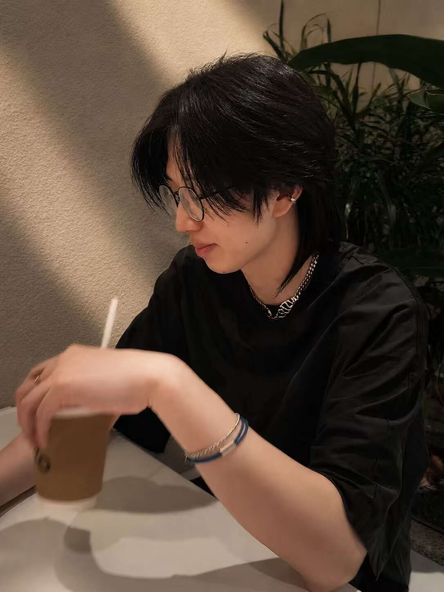

University of Pennsylvania · Mathematics
Shengjing Xu
I am a Ph.D. student in the Department of Mathematics at the University of Pennsylvania, where I work with Tony Pantev and Xin Sun.
I am on the academic job market for 2026-2027.
My research lies at the interface of complex algebraic geometry and probability. I study Higgs bundles, flat connections, and their connections to the Langlands program. On the probability side, I study probabilistic Liouville theory and random surfaces, as well as random matrices and particle systems.
Before coming to Penn, I received my B.S. in Mathematics from the University of Science and Technology of China in 2022.
Expected Ph.D. completion: May 2027.
Upcoming activities
Papers & preprints
-
2026
Qin’s quasimodularity conjecture for Hilbert schemes of points [AI-assisted]
-
2026
String equation for conformal loop ensemble on Liouville quantum gravity sphere
-
2026
Support of Dyson Brownian Motion
arXiv:2609.01770Submitted
-
2026
Counterexamples to Sato’s Weak F-Equivalence Conjecture and a Gorenstein Refinement [AI-assisted]
arXiv:2608.18054Submitted
-
2026
Ward identities: a geometric point of view and applications
-
2026
Lagrangian correspondences for moduli spaces of Higgs bundles and holomorphic connections
-
2024
Annulus crossing formulae for critical planar percolation
arXiv:2410.04767Submitted
In preparation
- Moduli Space of Residue Parameters and Lagrangian Correspondence for λ-ConnectionsDraft available upon request.
- Colored divisors and Lagrangian correspondence for G Higgs bundle
- Dynamical edge universality and the Airy-β line ensembleDraft available upon request.
Research talks
- Dynamical edge universality and the Airy-β line ensembleSpecial Session on Schramm-Loewner Evolutions and Random Matrix Theory · AMS Fall Eastern Sectional Meeting · George Washington UniversityEvent & abstract
- Holomorphic Lagrangians, Colored Divisors, and Higgs BundlesGeometry & Topology Seminar · University of MarylandEvent & abstract
- Generalized Baker–Akhiezer divisors and residue parametersPoster · Higher Structures, Moduli Spaces and Integrability · University of Hamburg
- Holomorphic Lagrangians in Higgs and de Rham Moduli SpacesMathematics-String Theory Seminar · Kavli IPMU, University of TokyoEvent & abstract
- Holomorphic Lagrangians in Higgs and de Rham Moduli SpacesCaltech/USC Joint Algebra and Geometry Seminar · University of Southern CaliforniaEvent & abstract
- Holomorphic Lagrangians in Higgs and de Rham Moduli SpacesMath-Physics Joint Seminar · University of Pennsylvania
- Holomorphic Lagrangians in Higgs and de Rham Moduli SpacesDifferential Geometry Seminar · University of Hamburg
- Ward identity: a geometric point of view and applicationsProbability Seminar · Peking University
- Liouville quantum gravity sphereProbability Seminar · University of Science and Technology of China